Conoceme
Mas
Soy un gran apasionado en el mundo de la robótica, donde lo programado se ve en físico. Me motiva desarrollar e implementar tecnología beneficiosa para la sociedad, combinando el rigor de la ingeniería con la flexibilidad del desarrollo moderno.
Competencias Técnicas
Stack// Hardware
- Sistemas de control robótica móvil
- NVIDIA Jetson (AGX Orin, Orin NX)
- Fusión sensores: IMU, Lidar, RealSense
- Protocolos industriales e IoT (LoRa)
// Robótica & IA
- ROS2 Humble — Nav2, TF2, nodos
- Unitree Go2 — autonomía y teleop
- Isaac Sim / Isaac Lab (RL sim-to-real)
- CNN y Deep Learning en tiempo real
// Software
- Python, C++, Node.js
- Gazebo, 3D Gaussian Splatting
- CycloneDDS, Socket.IO, WebSocket
- LaTeX / Overleaf
Trayectoria & Bitácora
LogRumbo a RoboCup 2026 — Incheon, Corea del Sur
Nix-Lab | Equipo: Sentinel NXL
Actualmente me encuentro colaborando activamente con el equipo de Nix-Lab. Nos estamos preparando intensamente para representar a México en el certamen mundial de robótica en Incheon, Corea del Sur, enfocándome en el diseño, optimización y puesta a punto de los sistemas robóticos autónomos.
🥇 1er Lugar Nacional — TMR (Puebla)
Equipo: Sentinel ACL
Fui partícipe en esta edición del Torneo Mexicano de Robótica con el equipo Sentinel ACL, donde logramos coronarnos con el primer lugar nacional. En este proyecto, mi aportación se centró en el desarrollo de los algoritmos de visión computacional y la integración de periféricos esenciales para el reconocimiento en entornos dinámicos.
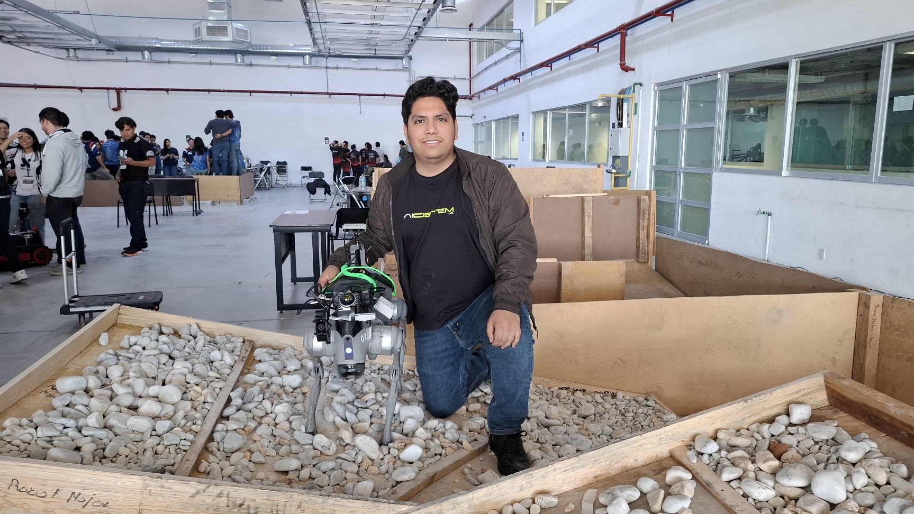
Ingeniero en Robótica y Gemelos Digitales
AICistem Labs
A inicios de año me integré al equipo de Ai Cistem Labs. Inicialmente trabajé dotando de autonomía y funciones avanzadas de seguridad a plataformas cuadrúpedas (Unitree Go2). Posteriormente, transicioné al área de Gemelos Digitales, donde utilicé el ecosistema de simulación avanzada de NVIDIA (Isaac Sim e Isaac Lab) para validar algoritmos robóticos en entornos virtuales hiperrealistas.
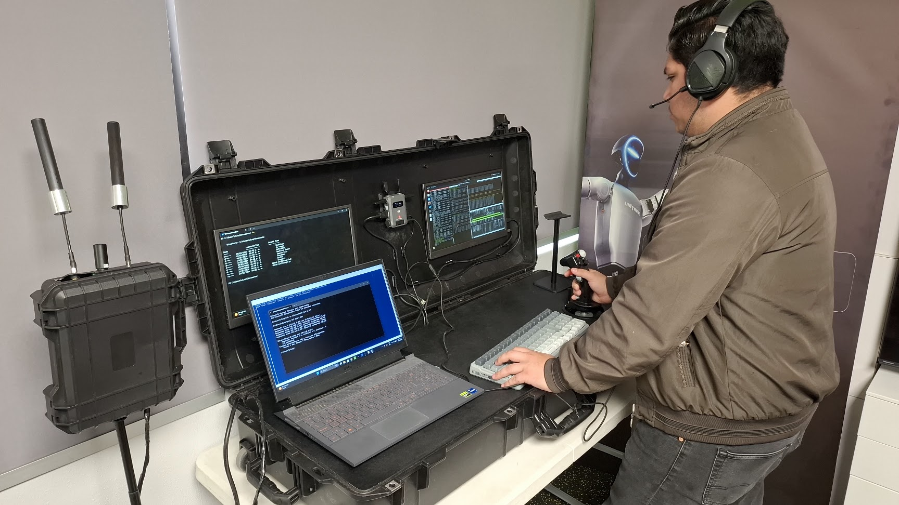
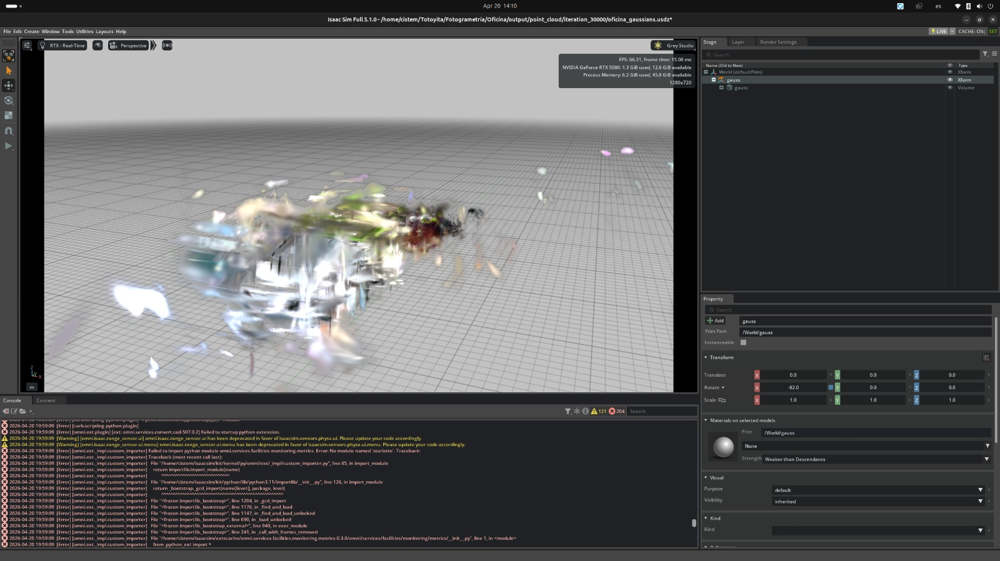
Divulgación Científica & Gira Tecnológica
Fui expositor en el marco del evento del "Día del Investigador", donde presenté una demostración práctica de un robot agronómico y un sistema de monitoreo de contaminantes en tiempo real. Asimismo, durante los meses restantes del año, estuve participando como ponente en distintas instituciones, exponiendo mi trabajo de investigación técnica enfocado en la implementación de sistemas de navegación reactiva y planificación de cobertura agrícola.
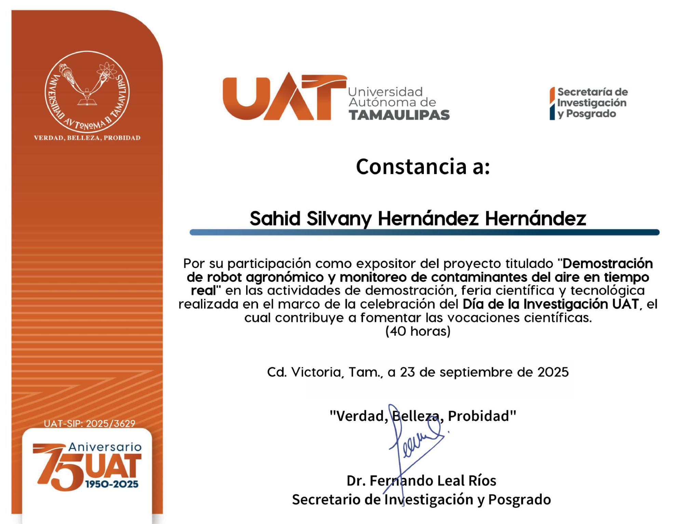
📄 Publicaciones Científicas e Investigación
Durante este periodo, consolidé una de mis metas profesionales al redactar, estructurar y publicar mis primeros trabajos de investigación técnica en plataformas indexadas internacionales y revistas especializadas:
Logré publicar mi primer artículo científico como autor principal. En este trabajo, me dediqué a realizar un análisis profundo sobre cómo la convergencia de hardware embebido, sensores y modelos predictivos está optimizando el sector agrícola y la gestión fitosanitaria.
Leer mi publicación →Fui partícipe directo como segundo autor en el diseño y validación de este framework de Machine Learning. Colaboré de cerca en la integración de metamodelos ensamblados orientados a soportar decisiones médicas críticas en tiempo real.
Ver artículo en Journal →🌍 8vo Lugar Mundial — RoboCup 2025 (Brasil)
Equipo: Nixito | Líder de Control y Teleoperaje
Viajé a Salvador de Bahía, Brasil, para competir en el certamen mundial de robótica. Fungí como líder del departamento de control y teleoperaje del robot Nixito, donde diseñamos sistemas de teleoperación de baja latencia para escenarios de desastre, logrando posicionar a México en el 8vo lugar internacional frente a 18 países participantes.
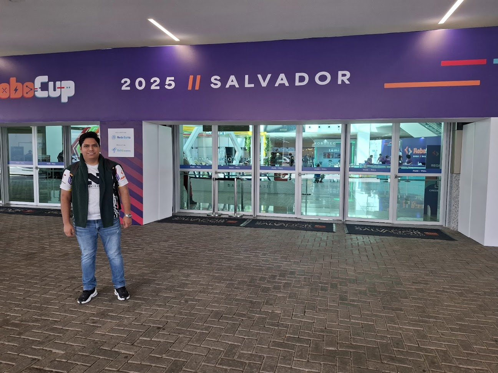
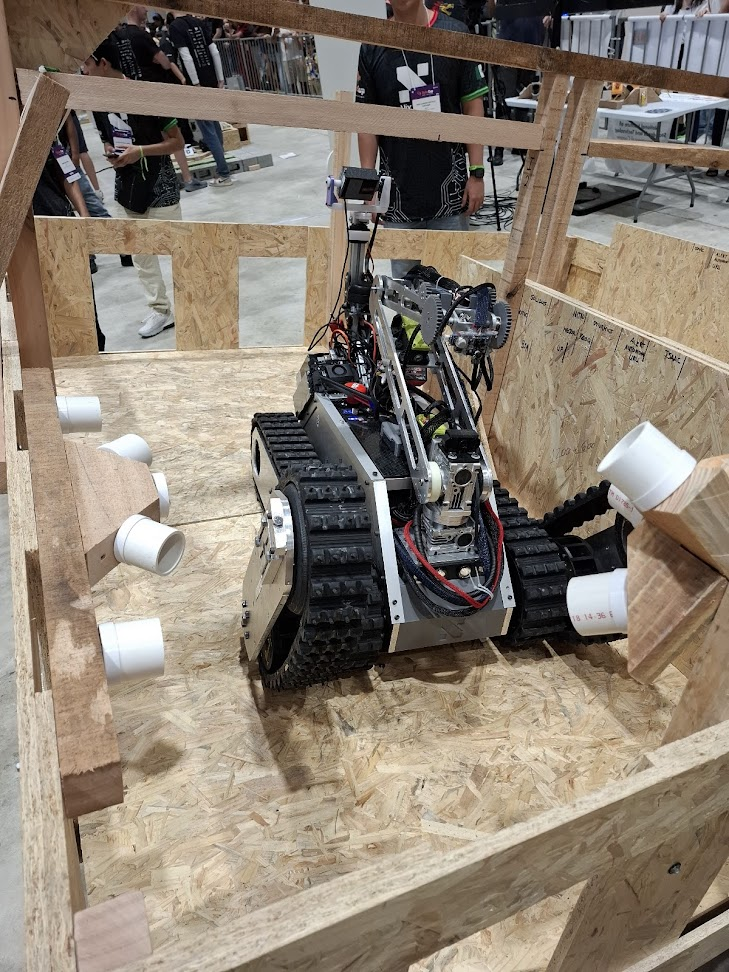
Taller Internacional de Geointeligencia Fitosanitaria
Participé en esta capacitación especializada donde profundicé en los retos actuales de la geointeligencia fitosanitaria y analizamos la capacidad de la Inteligencia Artificial para asistir de manera inteligente a los ingenieros agrónomos.
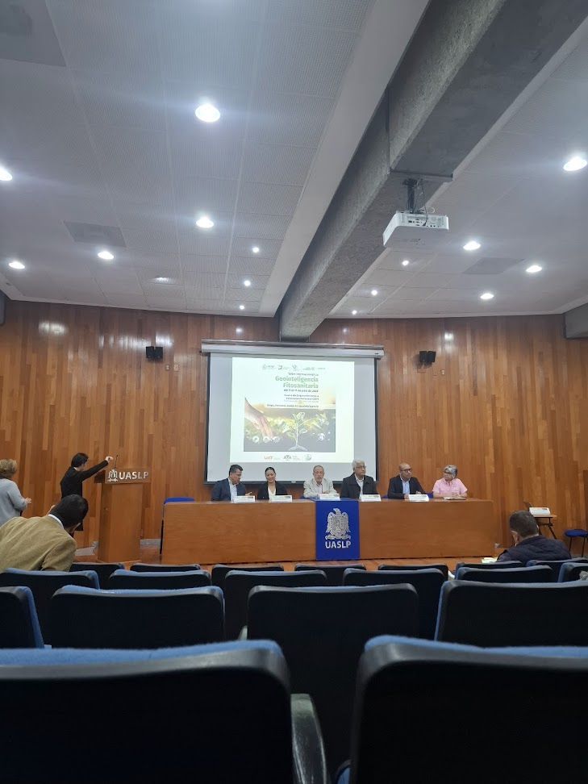
Ponente e Instructor — UAT
Tuve la gran oportunidad de ser ponente e instructor invitado en la Facultad de Ingeniería y Ciencias de la UAT. Impartí una cátedra y un taller práctico sobre el "Uso e implementación del protocolo LoRa" dirigido a estudiantes de la carrera de Telemática.
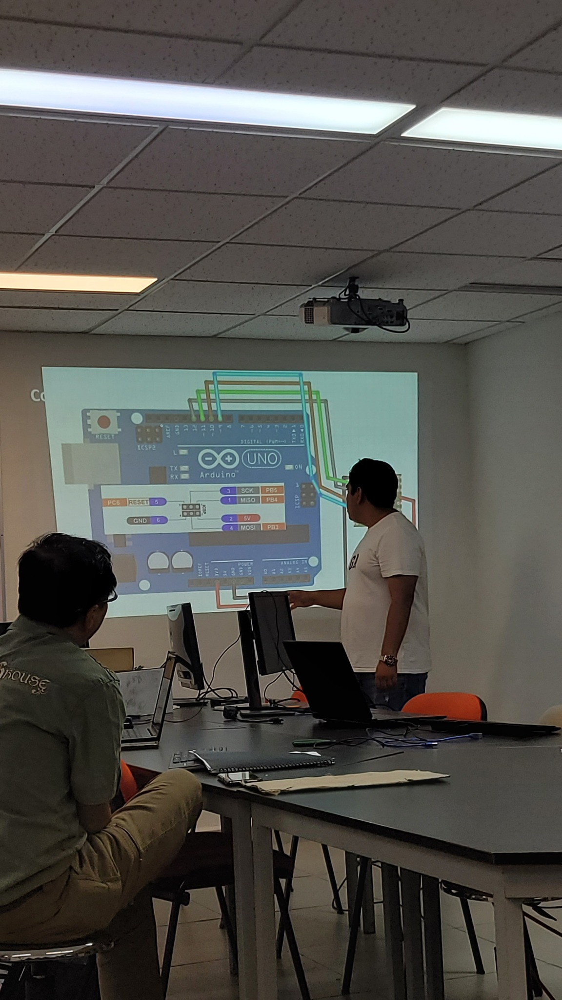
4to Lugar Nacional & Clasificación Internacional — TMR
Equipo: NXL-ALPHA
Fui partícipe en el Torneo Mexicano de Robótica con mi equipo NXL-ALPHA, donde obtuvimos la cuarta posición a nivel nacional y logramos asegurar nuestra clasificación directa al mundial de robótica en Brasil.
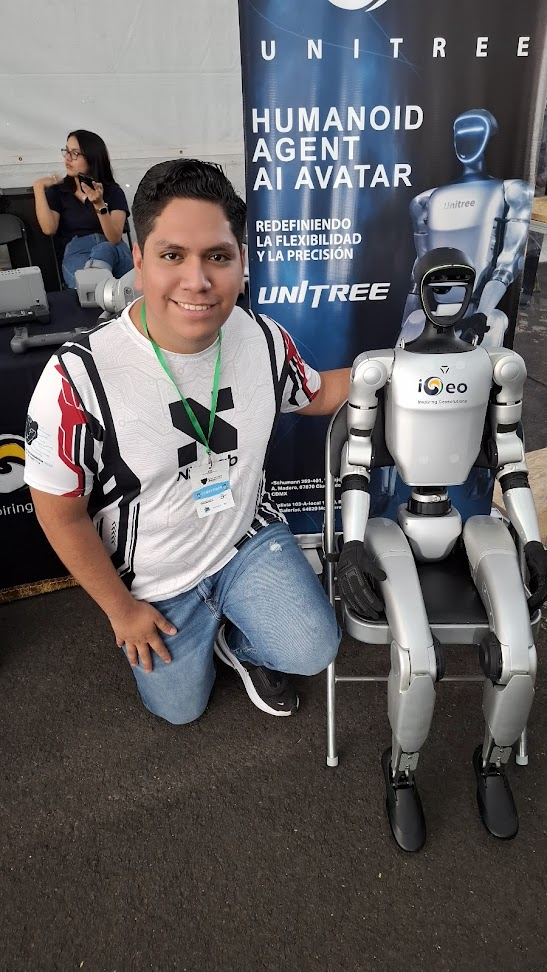
Visión Artificial: Clasificación Biológica (CNN)
Colaboré con un equipo de trabajo enfocado en el desarrollo de un modelo de Redes Neuronales Convolucionales (CNN) destinado a la detección autónoma y monitoreo del pez león, una especie marina altamente invasora.
5to Lugar Nacional — TMR Rescue Major
Equipo: Shelter
Participé en el Torneo Mexicano de Robótica bajo la categoría Rescue Major con el equipo Shelter, obteniendo el 5to lugar a nivel nacional. En esta competencia, mi rol principal fue diseñar y poner en marcha una Unidad de Control Teleoperada (UCT) para optimizar la interfaz del robot.
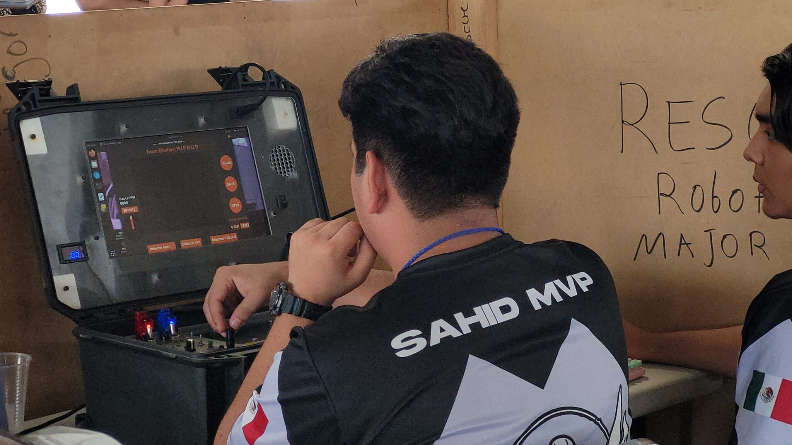
Mentoría — Proyecto EPP Watchdog
Apoyé de manera externa a estudiantes de preparatoria en la integración de modelos de visión artificial para su proyecto "EPP Watchdog". Específicamente, desarrollé un modelo enfocado en la identificación automática de Equipo de Protección Personal para mejorar la seguridad en plantas industriales.
🥇 1er Lugar Nacional — TMR
Equipo: Medio Metro
Fui integrante del equipo "Medio Metro" en el Torneo Mexicano de Robótica, donde nos adjudicamos el primer lugar nacional. Mi participación directa consistió en realizar la gestión de toda la electrónica de control del robot y programar sus movimientos dinámicos en pista.
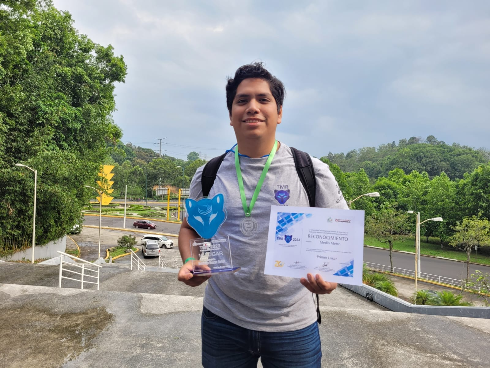
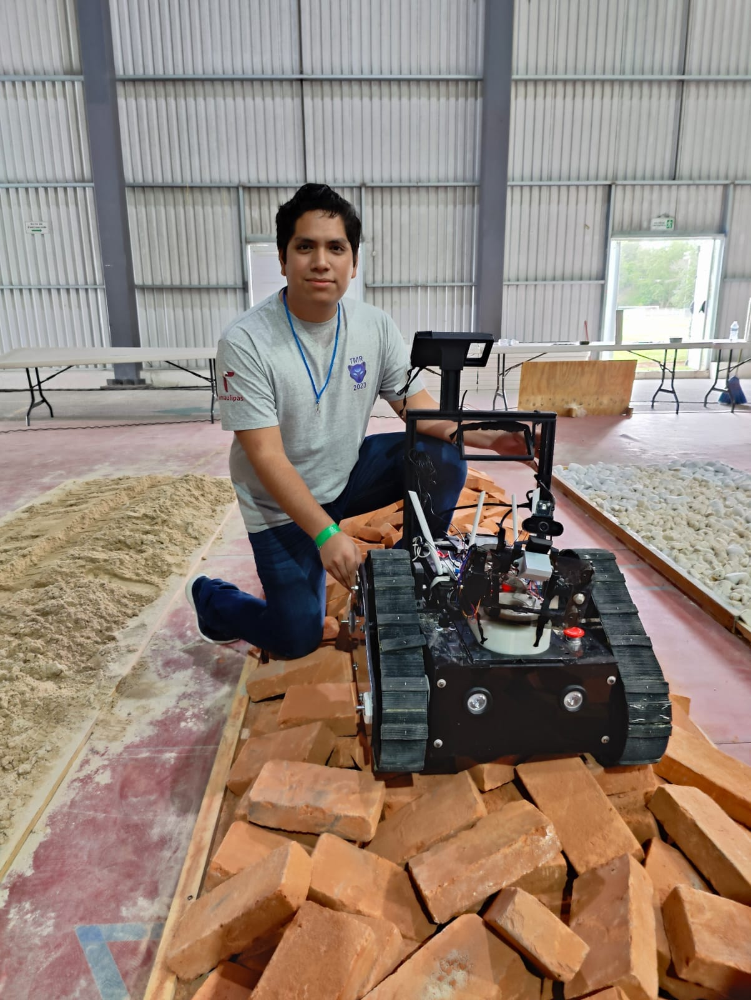